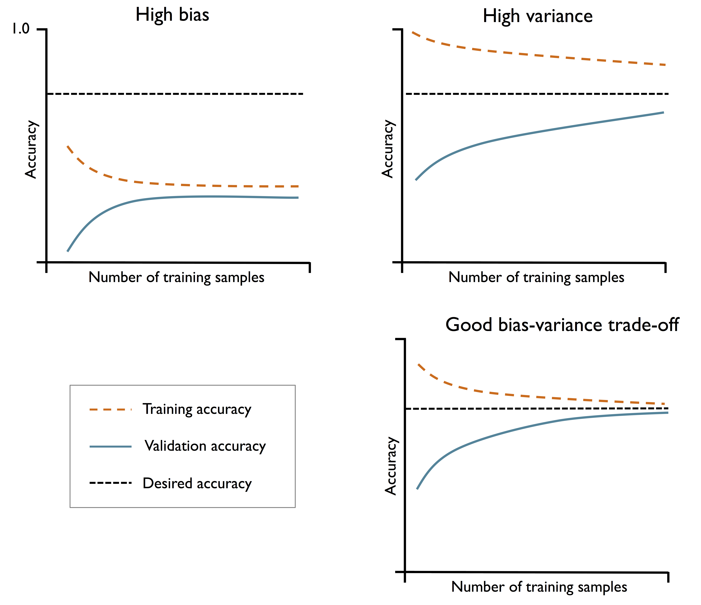
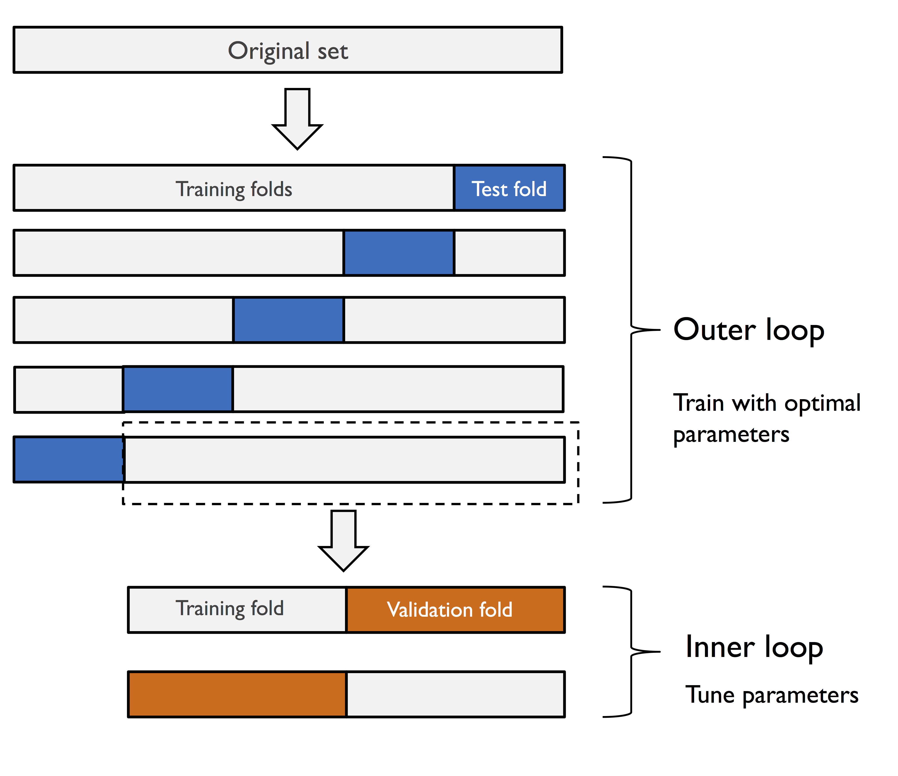
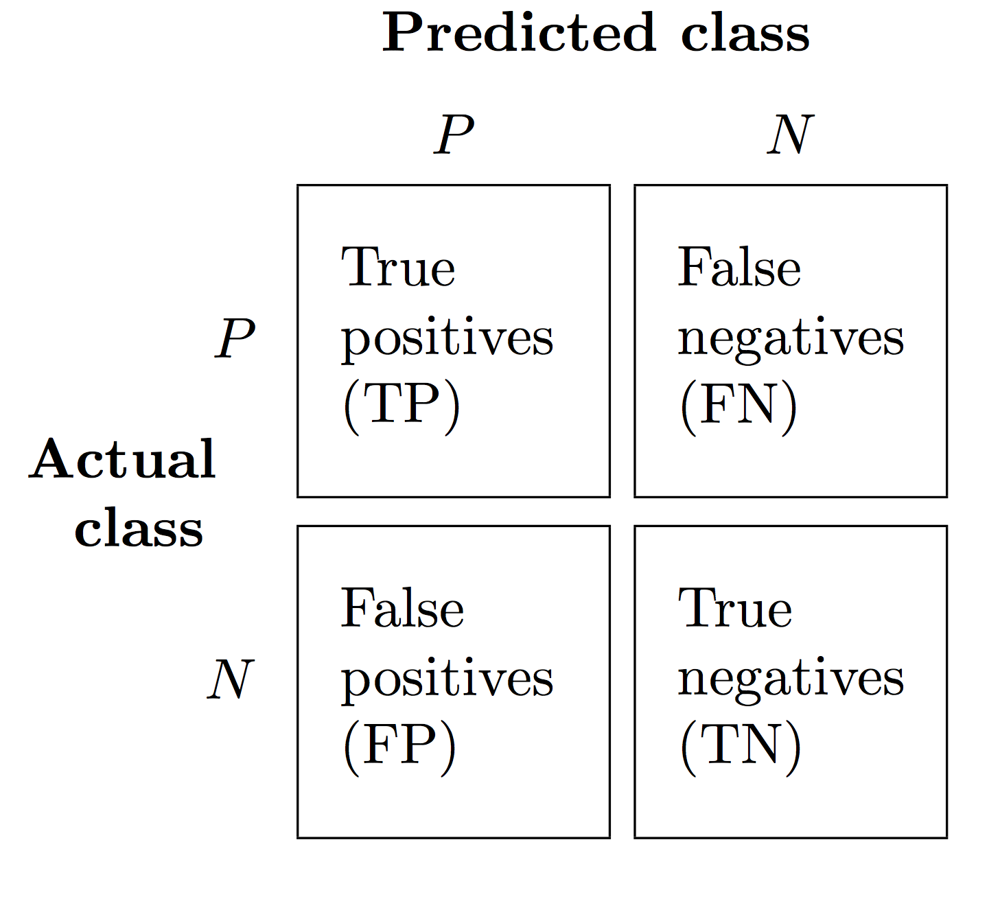
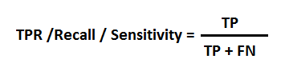
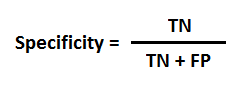
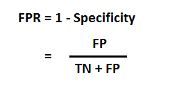
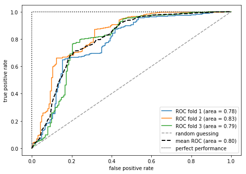

接触机器学习一段时间了， 但是对如何衡量和提高机器学习效率的几个问题不是很清楚。 这篇文章是根据《Python 机器学习》第六章的内容整理而来。
概要
- K叠交叉验证
- 高方差 高偏差
- 如何更具学习和验证曲线来验证算法
- 如何调优学习模型的超参数
- 如何衡量不同学习模型的性能
- K叠交叉验证
在初始的机器学习流程中， 我们会把训练集和和测试集合分开， 应用训练集合来训练模型， 用测试集合来验证结果。 但是不管你随机分， 还是直接根据序号按照百分比来分，都很难保证这个测试集合的规律和训练集合的规律类型， 或者说如何能够保证测试集合能够反映训练集合的效果。
必须换一个角度。 比如求多次平均。 K fold 交叉验证就是这样得来的。
- 如何操作呢
把数据集合分成k份， 第一次用k-1份来训练， 用第k份来测试。 第二呢， 交换一下。如此以往k次以后来算k次的平均的准确率，这样得到的结果相比较与一次的结果， 更能够反正这个模型在整个样本集合的效果。
- 如何根据学习和验证曲线来验证算法
方差 偏差
方差是 variance， 偏差是 bias。 初学者经常弄不清楚两者的区别和联系， 乃至于如何判断以及处理。
- The bias is an error from erroneous assumptions in the learning algorithm. High bias can cause an algorithm to miss the relevant relations between features and target outputs (underfitting).
- The variance is an error from sensitivity to small fluctuations in the training set. High variance can cause an algorithm to model the random noise in the training data, rather than the intended outputs (overfitting).
偏差就是差距， 就是和真实值之间的差距。如果越大， 预示着模型预测不准确， 欠拟合。
而方差呢是指的预测结果的离散程度。 如果越大呢， 预示着过拟合。
学习曲线
而如下图所表示的， 随着样本的增大， 准确率都是在变化， 并且趋于稳定。 一个是高偏差， 一个是高方差， 一个是我们期望的低方差和低偏差。


这个学习曲线表明了欠拟合还是过拟合。
那么如果是欠拟合， 如何提高呢？ 需要进一步寻找相关性强的特征， 然后来提高准确率。 减少正则化参数。
如果是过拟合呢， 有些特征可能没有用处。 获取更多的数据。 增加噪声。结合各种模型。 使用正则化方法。
在scikit learn 里面用 learning_curve， 通过样本的增加来看是欠拟合 过拟合还是符合期望。
validation_curve
这个呢不是为了画学习曲线而是通过调整超参数来看是否可以提高欠拟合和过拟合。
- 默认都是用stratified k-fold cross-validation来估计结果。
- 这个是在同样的样本中的 。
- TODO
- 如何调优学习模型的超参数
用grid search 来寻找最好的精度。
不同的模型有不同的超参数。 所谓超参数， 是相对于参数而言。 参数是模型fit数据的时候自动调整的， 而超参数则是预设的， 不同的超参数所适应的模型范畴不同。 所以需要在里面寻找最合适你的数据的。
比如：
1 | param_range = [0.0001, 0.001, 0.01, 0.1, 1.0, 10.0, 100.0, 1000.0] |
- 如何选择不同学习模型
这部分是如何通过内嵌的交叉验证来进行算法选择。


这个还是思考了一下， 这是根据一篇论文来的。
首先问题提出是说如何来衡量不同学习模型的性能， 在实践阶段呢， 我们一般会把数据集合划分为 训练集合， 交叉验证集合， 测试集合。
- 很容易理解， 在训练集合训练模型， 然后交叉验证集合验证模型。 最后在测试集合来拿到准确率。
- 这个理论是这样做的。 首先把数据集合根据kfold 来划分k份。 对于k-1训练，然后test 来验证。 而k-1 训练的过程呢， 用一部分来进行训练， 另外一部分进行验证。
- 在训练的时候呢， 可以用grid search。
实例如下
这段代码首先把训练的集合来用5fold来进行cross 验证， 就是用五次的平均精确来比较。
对每次呢， 是遍历了svc的一些超参数param_grid 拿到最好的参数。 这里的cv也是5.1
2
3
4
5
6
7
8
9gs = GridSearchCV(estimator=pipe_svc,
param_grid=param_grid,
scoring='accuracy',
cv=2)
scores = cross_val_score(gs, X_train, y_train,
scoring='accuracy', cv=5)
print('CV accuracy: %.3f +/- %.3f' % (np.mean(scores),
np.std(scores)))
然后这个结果才是应用于unseen 的数据的， 那超参数到底是什么呢？
第二个模型
这个同样是用2叠的数据分类来进行超参数的turning- 两次， 每次用一个训练， 一个测试。 然后求最好的。
然后呢， 用这个模型在5叠的平均值作为它的结果。1
2
3
4
5
6
7
8
9
10
11from sklearn.tree import DecisionTreeClassifier
gs = GridSearchCV(estimator=DecisionTreeClassifier(random_state=0),
param_grid=[{'max_depth': [1, 2, 3, 4, 5, 6, 7, None]}],
scoring='accuracy',
cv=2)
scores = cross_val_score(gs, X_train, y_train,
scoring='accuracy', cv=5)
print('CV accuracy: %.3f +/- %.3f' % (np.mean(scores),
np.std(scores)))
TODO 如何实操。
我也可以这样做， 就是两层。 这里面第一轮是遍历找好的超参数。
第二轮是找到精确值。 问题是每次的最好的精确值是一样的超参数么， 这个超参数又是从哪里获得呢。
鉴于上面的问题， 我目前手工划分测试集合， 这个是对的。
然后呢直接用那些来进行调参和优化， 并没有利用5*2的这种模型。 而是直接先grid， 然后拿到了之后呢进行准确率的k fold的平均值比较。
refer
- Bias in Error Estimation When Using Cross-Validation for Model Selection - paper
看懂不同的性能度量参数
除了准确率， 还有别的参数， 精确率， 召回率， F1-score
首先看混淆矩阵，
- TF true positives 正确的预测对了。 预测成正确的。
- FN false Negative 正确的预测错了。 预测成错误的。
- FP False positive 错误的预测错了。 预测成正确的。
TN True Negative 错误的预测对了。 预测成错误的。
所谓准确率 就是所有预测对的， 对的和错误都预测对的， 除以所有的结果。
- 所谓精确率， 是从结果来看， 所有预测称为正确中， 准确预测的比例。 就是 TF除以（TF+FP） 纵轴。
- 所谓召回率， 就是从原来的样本为真的来看， 所有预测为正确的占过去所有为真的比例。 TF 除以（TF+FN） 横轴
- F1 score 是两者的综合， 就是2 （PRE REC）除以（PRE+REC）


注意关于准确率
目前都是以准确率为例， 其实以上所有的函数都是可以设置是准确率， 精确率， 召回率 还是F1的。
其他
如果直接求解 recall_sore, precision_score 用scikit learn， 你会发现结果又出入， 因为默认是以1为计算， 而不是0计算。也就是说正反是反的。 你可以指定。
或者你直接用这个classification_report， 默认就是0 来计算。
参考
- from sklearn.metrics import recall_score
- from sklearn.metrics import Auc
- from sklearn.metrics import f1_score
- from sklearn.metrics import precision_score
关于ROC AOC
我用它来计算了一下在训练集合的效果。 这是看了一下这种算法在这个集合上的状态。
ROC和AUC定义
ROC全称是“受试者工作特征”（Receiver Operating Characteristic）。ROC曲线的面积就是AUC（Area Under the Curve）。AUC用于衡量“二分类问题”机器学习算法性能（泛化能力）。
TPR against the FPR
Y X
TPR 就是 true positive rate 原来是正确， 现在预测是正确。 问题原来是正确， 现在预测是错误的， 这部分怎么说， 有没有类别。
FPR 就是false positive rate。 就是原来是false， 现在预测称正确。
TPR (True Positive Rate) / Recall /Sensitivity
TP 除以所有本身是真的。 正确的预测正确的。


Specificity
TN true negative 是就是错误的预测成错误的。 FP 错误的预测成正确的。
原来都是错误的， 现在


FPR
就是说错误预测成正确的， 占所有本身错误的。 这个是错误中预测错误的。


如何看
如何看呢。
A poor model has AUC near to the 0 which means it has worst measure of separability. In fact it means it is reciprocating the result. It is predicting 0s as 1s and 1s as 0s. And when AUC is 0.5, it means model has no class separation capacity whatsoever.
最差的就是0这条线， 就是说错误的预测正确， 正确的预测错误。
对角线， 是说各50%
下面是我的代码的例子
1 | # ROC |


precision recall curve
TODO
整理一段实用的代码
TODO
- precision recall curve
- 关于几个衡量标准 - 遇到新的再说
- 关于ROC 学习 - 清楚了， 进一步如何使用需要几千。
- 这个5*2 需要继续深入么 - 基本清楚。 但是没有实用。
refer
- https://towardsdatascience.com/understanding-auc-roc-curve-68b2303cc9c5 for ROC
- scikit learn doc
体会
- 就是grid 找参数。
- curve 来看是否过拟合
- kfold 来评判精确率
- 精确率 召回率 准确率 根据场景不同有不同的选择。
- 下面关于测试集合的选择。 - 这个还是难事， 找找kaggle 如何做的？
title: 关于机器学习流程以及几个度量的理解
date: 2018-10-06 17:04:43